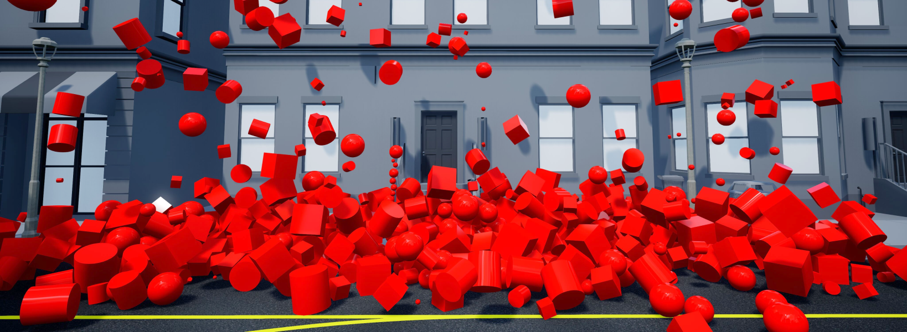
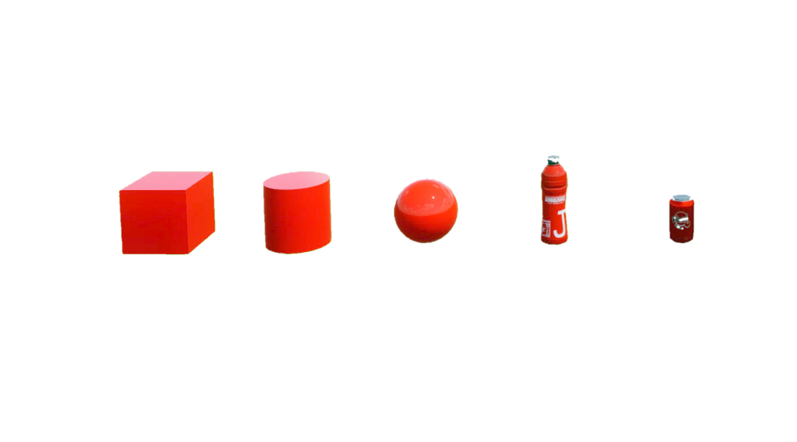

Widgets
Widgets work slightly differently then the other objects in the QLabs workspaces. They are special actors that cannot be addressed after they have been spawned therefore they cannot be deleted individually, they do not support parenting and all actor properties must be set when they are spawned. The advantage of widgets is that they are highly efficient dynamic actors so it is possible to spawn thousands of widgets while maintaining performance.
In addition to the visible properties of widgets, widget actors can also individually contain invisible properties such as mass, a numerical ID tag, and a general purpose properties string. Some actors that are designed to interact with widgets include class methods to read these properties.
If you need the ability to make shapes static or the ability to address, modify, or parent shapes, see Basic Shapes instead.
See the Tutorial to get a better understanding of using people in Quanser Interactive Labs.
Description
Library
Constants
- QLabsWidget.CUBE = 0
- QLabsWidget.CYLINDER = 1
- QLabsWidget.SPHERE = 2
- QLabsWidget.PLASTIC_BOTTLE = 4
- QLabsWidget.METAL_CAN = 5
Methods
- QLabsWidget.__init__(qlabs, verbose=False)[source]
Constructor Method
- Parameters
qlabs (object) – A QuanserInteractiveLabs object
verbose (boolean) – (Optional) Print error information to the console.
- QLabsWidget.spawn(location, rotation, scale, configuration, color=[1, 1, 1], measuredMass=0, IDTag=0, properties='', waitForConfirmation=True)[source]
Spawns a widget in an instance of QLabs at a specific location and rotation using radians.
- Parameters
location (float array[3]) – An array of floats for x, y and z coordinates.
rotation (float array[3]) – An array of floats for the roll, pitch, and yaw in radians.
scale (float array[3]) – An array of floats for the scale in the x, y, and z directions.
configuration (uint32) – See configuration options
color (float array[3]) – Red, Green, Blue components of the RGB color on a 0.0 to 1.0 scale.
measuredMass (float) – A float value for use with mass sensor instrumented actors. This does not alter the dynamic properties.
IDTag (uint8) – An integer value for use with IDTag sensor instrumented actors.
properties (string) – A string for use with properties sensor instrumented actors. This can contain any string that is available for use to parse out user-customized parameters.
waitForConfirmation (boolean) – (Optional) Make this operation blocking until confirmation of the spawn has occurred.
- Returns
status - True if successful, False otherwise
- Return type
boolean
- QLabsWidget.spawn_degrees(location, rotation, scale, configuration, color=[1, 1, 1], measuredMass=0, IDTag=0, properties='', waitForConfirmation=True)[source]
Spawns a widget in an instance of QLabs at a specific location and rotation using degrees.
- Parameters
location (float array[3]) – An array of floats for x, y and z coordinates.
rotation (float array[3]) – An array of floats for the roll, pitch, and yaw in degrees.
scale (float array[3]) – An array of floats for the scale in the x, y, and z directions.
configuration (uint32) – See configuration options.
color (float array[3]) – Red, Green, Blue components of the RGB color on a 0.0 to 1.0 scale.
measuredMass (float) – A float value for use with mass sensor instrumented actors. This does not alter the dynamic properties.
IDTag (uint8) – An integer value for use with IDTag sensor instrumented actors.
properties (string) – A string for use with properties sensor instrumented actors. This can contain any string that is available for use to parse out user-customized parameters.
waitForConfirmation (boolean) – (Optional) Make this operation blocking until confirmation of the spawn has occurred.
- Returns
status - True if successful, False otherwise
- Return type
boolean
- QLabsWidget.destroy_all_spawned_widgets()[source]
Destroys all spawned widgets, but does not destroy actors.
- Returns
True if successful, False otherwise
- Return type
boolean
- QLabsWidget.widget_spawn_shadow(enableShadow=True)[source]
If spawning a large number of widgets causes performance degradation, you can try disabling the widget shadows. This function must be called in advance of widget spawning and all subsequence widgets will be spawned with the specified shadow setting.
- Parameters
enableShadow (boolean) – (Optional) Show (True) or hide (False) widget shadows.
- Returns
True if successful, False otherwise
- Return type
boolean
Configurations
Connection Points
There are no connection points for this actor class.
Tutorial
Example
1"""
2Widget Library Example
3----------------------
4
5.. note:: Make sure you have Quanser Interactive Labs open before running any of these examples.
6
7.. tip:: If you are struggling to get this example running check out our _Troubleshooting page.
8
9"""
10# imports to important libraries
11import sys
12import math
13import time
14sys.path.append('../libraries/')
15from library_qlabs import QuanserInteractiveLabs
16from library_qlabs_free_camera import QLabsFreeCamera
17from library_qlabs_widget import QLabsWidget
18
19def widgets(qlabs):
20 # initialize the widget class in qlabs
21 widget = QLabsWidget(qlabs)
22
23 # choose to show shadows on our objects since we aren't going to be spawning a lot of widgets
24 widget.widget_spawn_configuration(enableShadow=True)
25
26 # create 10 cubes of a variety of shades of red
27 for count in range(10):
28 widget.spawn_degrees(widgetType = widget.CUBE, location = [-15.504, 34.584+count*0.01, 1+count*0.6], rotation = [90,0,0], scale = [0.5,0.5,0.5], color = [1,0+count*0.03,0+count*0.02], measuredMass=0, IDTag=0, properties='', waitForConfirmation=True)
29
30 time.sleep(2)
31
32 # create 20 grey metal cans and place them at slightly different spots
33 for count in range(20):
34 widget.spawn(widgetType = widget.METAL_CAN, location = [-15.504, 32.584, 1+count*0.2], rotation = [0,0,0], scale = [1,1,1], color = [1,1,1], measuredMass=0, IDTag=0, properties='', waitForConfirmation=True)
35
36 time.sleep(1)
37
38 # create 20 plastic bottles of a variety of shades of blue
39 for count in range(20):
40 widget.spawn_degrees(widgetType = widget.PLASTIC_BOTTLE, location = [-15.504, 32.584, 1+count*0.2], rotation = [90,0,0], scale = [1,1,1], color = [count*0.01 ,count*0.02, 1], measuredMass=0, IDTag=0, properties='', waitForConfirmation=True)
41
42 time.sleep(1)
43
44 # create 10 spheres of a ombre of red to yellow
45 for count in range(10):
46 widget.spawn_degrees(widgetType = widget.SPHERE, location = [-15.504, 38.584+count*0.01, 1+count*0.6], rotation = [90,0,0], scale = [0.5,0.5,0.5], color = [1,0+ count*0.05,0+ count*0.01], measuredMass=0, IDTag=0, properties='', waitForConfirmation=True)
47
48 time.sleep(5)
49
50 # destroy widgets so that they don't continue to consume resources rolling around
51 #widget.destroy_all_spawned_widgets()
52
53def main():
54
55 # creates a server connection with Quanser Interactive Labs and manages
56 # the communications
57 qlabs = QuanserInteractiveLabs()
58
59 # initialize our desired variables
60 # note that you can use the coordinate helper to pick locations for your camera.
61 loc = [-23.201, 34.875, 3.482]
62 rot = [0, 20.023, -2.275]
63
64 # creates a server connection with Quanser Interactive Labs and manages the communications
65 qlabs = QuanserInteractiveLabs()
66
67 print("Connecting to QLabs...")
68 # trying to connect to QLabs and open the instance we have created - program will end if this fails
69 try:
70 qlabs.open("localhost")
71 except:
72 print("Unable to connect to QLabs")
73 return
74
75 # destroying any spawned actors in our QLabs that currently exist
76 qlabs.destroy_all_spawned_actors()
77
78 # create a camera in this qlabs instance
79 camera = QLabsFreeCamera(qlabs)
80
81 # add a custom camera at a specified location and rotation using degrees
82 camera.spawn_degrees(location=loc, rotation=rot)
83
84 # to switch our view from our current camera to the new camera we just initialized
85 camera.possess()
86
87 # run the code for using widgets
88 widgets(qlabs)
89
90 # close our connection to qlabs
91 qlabs.close()
92
93if __name__ == "__main__":
94 main()